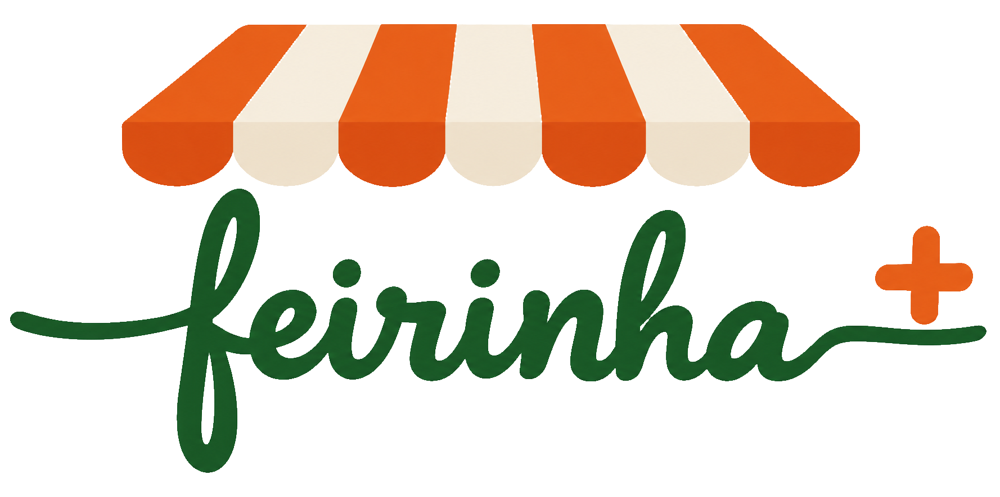

A feira acontece quando a comunidade compra.
O filme
A história do Feirinha+ em 1 minuto
Do sítio à feira no ponto de retirada. Animação de Heitor, da equipe Feirinha+.
A demonstração
O sistema rodando, nos três apps
Os apps do consumidor e do gestor funcionando, e o protótipo do app do produtor: da colheita ao Pix direto para quem plantou.
Experimente
O app do consumidor, no ar
Abre no navegador do celular, sem baixar nada. Conheça a vitrine, os agricultores e os pontos de retirada.
Abrir o Feirinha+A feira ainda está fechada: as compras abrem com a primeira feira-piloto, em novembro.